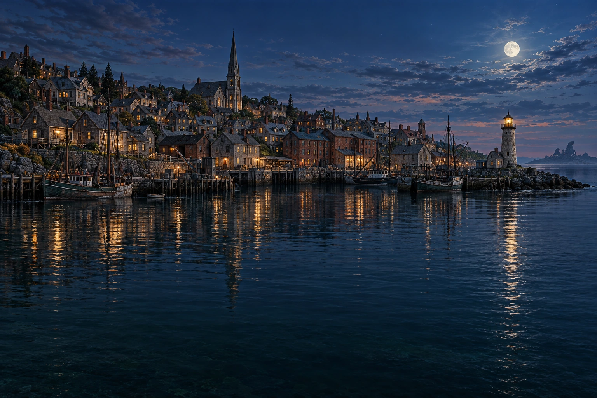
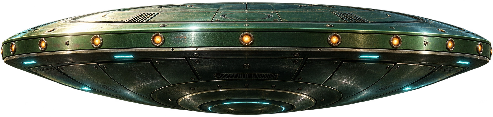
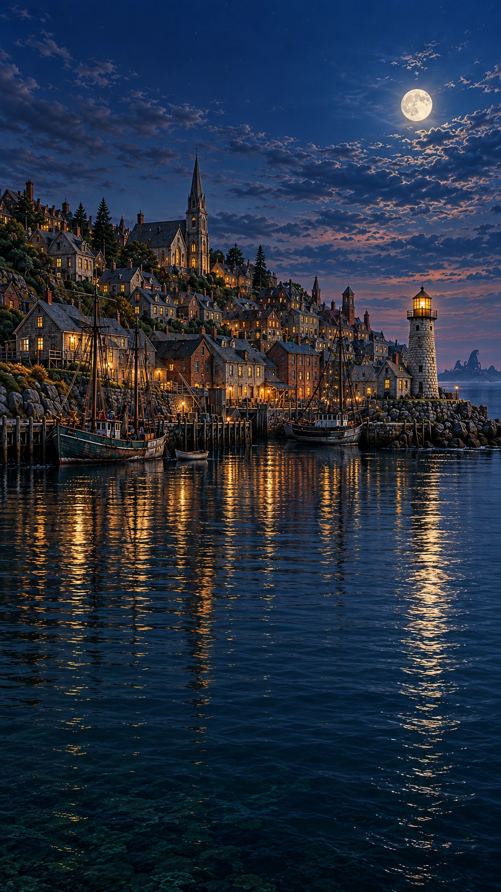
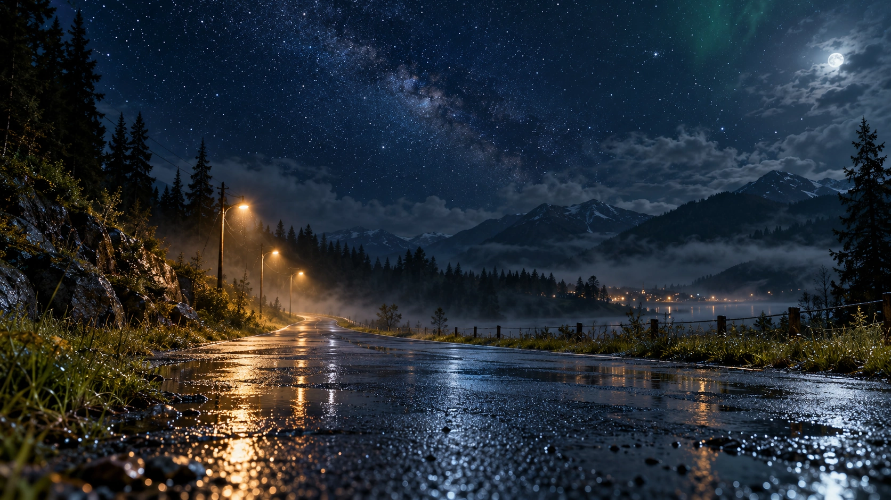

Dans un monde sans fin,
une silhouette cherche autre chose.
une silhouette cherche autre chose.
AU-DELÀ DE L’ORDINAIRE
Il suffit
d’un pas.
Le jour s’efface. La curiosité demeure.
Et quelque part, une porte attend.

AU-DELÀ DE L’ORDINAIRE
Le jour s’efface. La curiosité demeure.
Et quelque part, une porte attend.

Maintenez le cercle pour révéler le passage.
TROIS CHEMINS. VOTRE HISTOIRE.

Votre choix colore la suite du voyage.
L’ART DE PRENDRE SON TEMPS
Trois gestes.
Une parenthèse dans la nuit.
Le flacon attend.

LES ENCRES NOTTURNO
Bleu de nuit, la première encre reprend les reflets du port.
ÉTUDE CHROMATIQUE / 3 PIGMENTS
POUR LES NUITS QUI RESTENT.